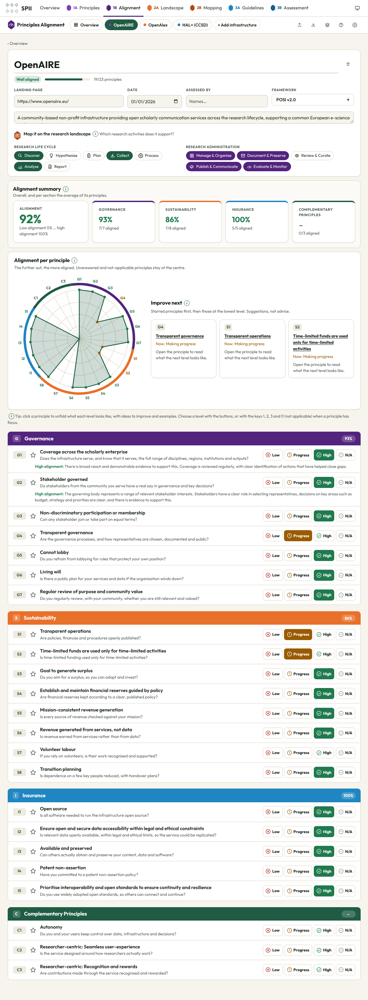
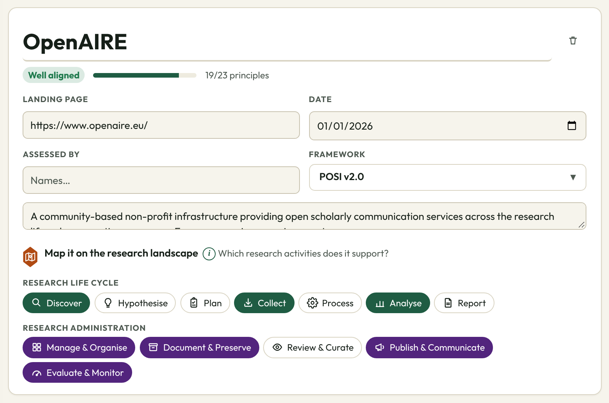
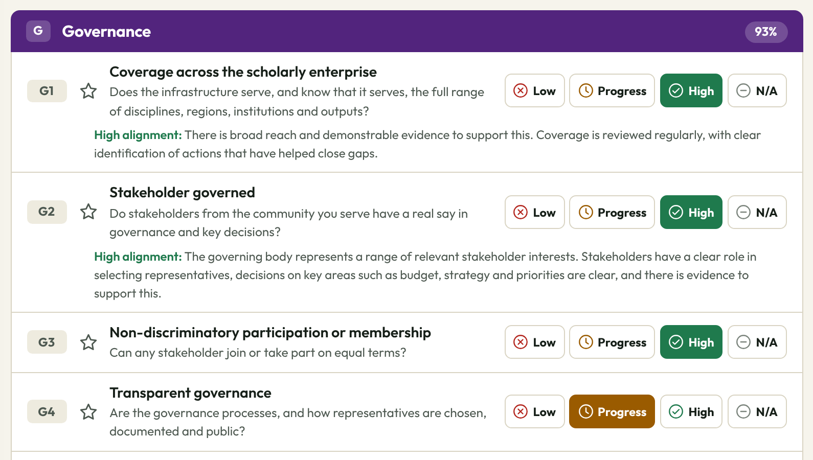
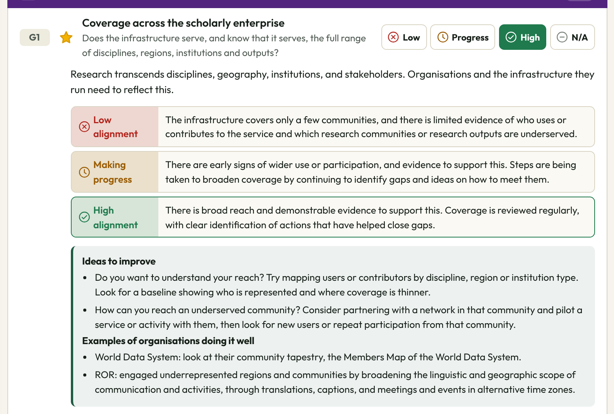
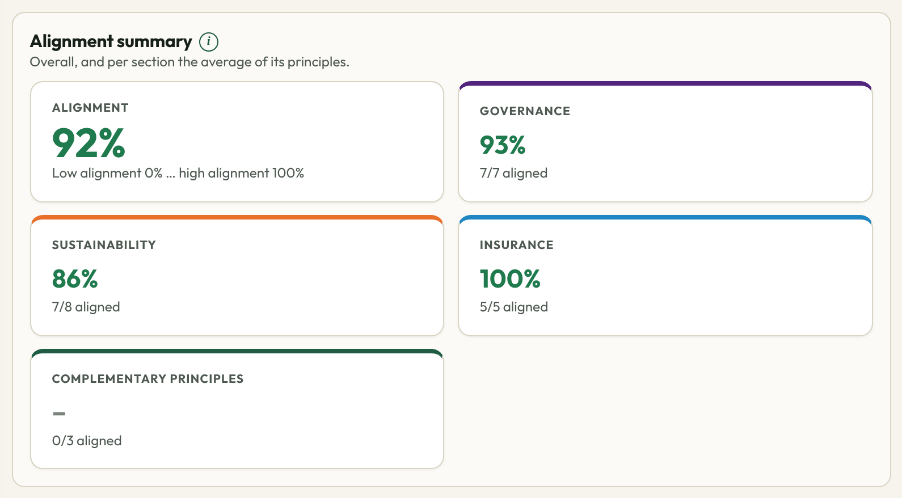
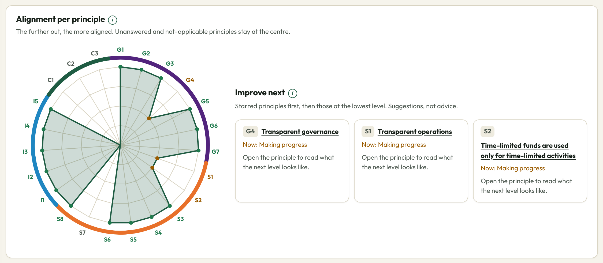
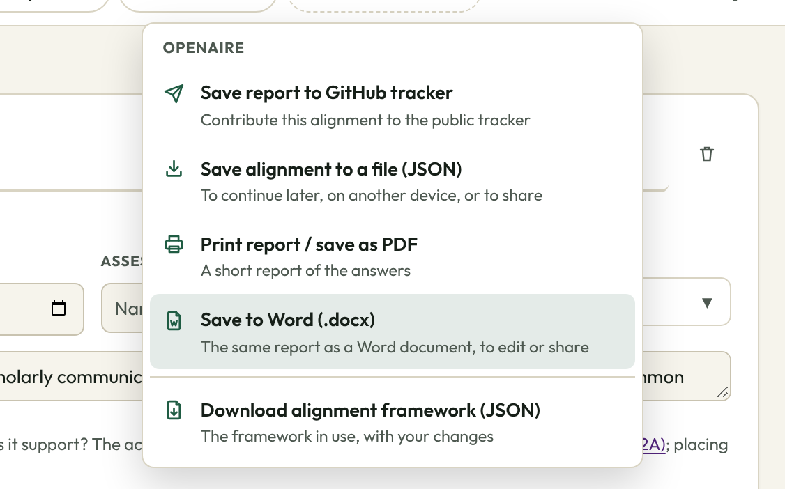
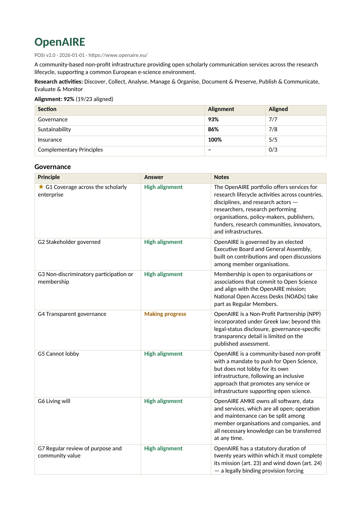
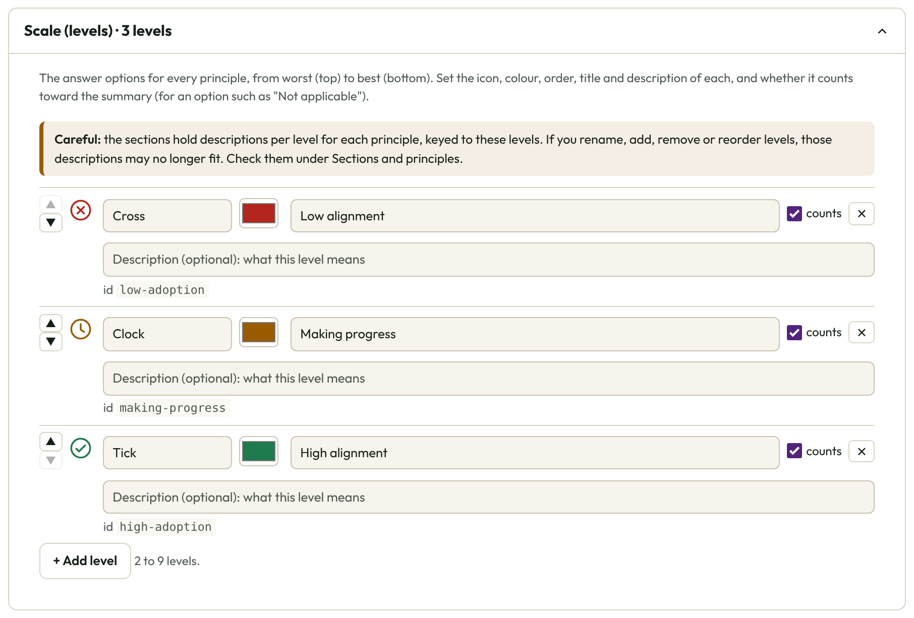
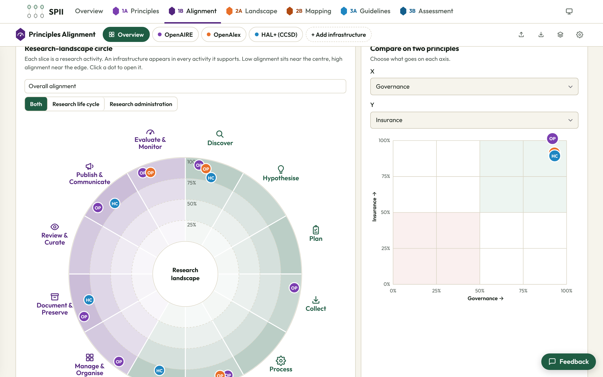

SPII · deliverable 1B
Self-assess how your Open Science infrastructure puts shared values and principles into practice.
Maurice Vanderfeesten, SURF · Open Science NL, 2 December 2026
Scan for the slides
and the tool
edu.nl/axnxx
Why
SPII is building a reference model for the Netherlands: three parts, each with a tool that puts it into practice.
1A · MODEL
Values and Principles
2A · MODEL
Landscape of Open Science infrastructures
3A · MODEL
Practical Interoperability Guidelines
1B · TOOL · TODAY
Principles Alignment Assessment Tool
2B · TOOL
Mapping of Infrastructures & Infrastructure development projects
3B · TOOL
Interoperability Assessment Tool
Principles
The base
Added after community consultations
Self-assess your infrastructure, and align it to these principles.

Your POSI report · 1 of 6

Your POSI report · 2 of 6

Your POSI report · 3 of 6

Your POSI report · 4 of 6


Your POSI report · 5 of 6


Your POSI report · 6 of 6
Extra functionality

Customization: edit and add other assessment frameworks, and scales yourself

Map other infrastructures on the researcher activities landscape
What is coming next
Early 2027
A final, user-friendly tool. It has been tested, and the feedback is being incorporated.
Guidelines
Examples of organisations doing it well and possible improvement actions, based on POSI adopters’ reports.
SPII
The other SPII deliverables follow.
Try it today
surf-ori.github.io/
spii-1b-principles-alignment-tool
Scan the code for these slides: edu.nl/axnxx
Export › Save to Word, and add the report to your proposal.
Export › Save report to GitHub tracker: it joins the examples and the overview.
The Feedback button on every SPII page; all of SPII at surf-ori.github.io/spii-overview.